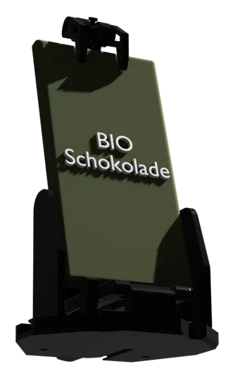
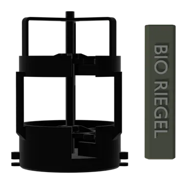

Mechanik-Test Phase 1
Die Ausgabe wurde erfolgreich getestet. Aktuell arbeiten wir an der Kalibrierung der Motoren für empfindliche Verpackungen und der Präsentation bei der Ausgabe.
Bewusst snacken.
Ein Prototyp für eine neue Art der Verpflegung. Abseits von Industriezucker und aggressiver Werbung.
Privates Entwicklungsprojekt. Kein Verkauf.
Klassische Automaten sind auf Impulskäufe optimiert. Sie bieten oft Produkte mit hohem Zuckergehalt und geringem Nährwert. Die Technik ist meist geschlossen und schwer zu reparieren.
Knusperwerk ist ein Gegenentwurf. Wir entwickeln einen Automaten, der gesunde Ernährung unterstützt, statt sie zu untergraben. Der Fokus liegt auf Transparenz – sowohl bei den Zutaten als auch bei der Technik.

Ein modularer, ehrlicher Snackautomat für bewussten Konsum. Entwickelt für Langlebigkeit, Transparenz und einfache Wartung.
Jedes Bauteil ist austauschbar. Wir nutzen Standardkomponenten statt proprietärer Hardware, um die Lebensdauer des Automaten zu maximieren und Reparaturen zu vereinfachen.
Ein robustes Gehäuse aus Blech und Aluminium mit einer Dämmung aus Armaflex. Funktionsbauteile werden präzise aus PETG gedruckt.
Die Software und alle Baupläne werden langfristig dokumentiert und öffentlich geteilt. Wissen wächst, wenn man es teilt – für eine transparente Snackkultur.

Foto-PrototypSpeziell konzipiert für die sichere und gekühlte Aufbewahrung von Tafelschokolade. Spirallose Ausgabe für unbeschädigte Produkte.

Foto-PrototypFlexibel anpassbar für verschiedene Riegelformate. Maximale Platzausnutzung und sicherer Auswurfmechanismus für jeden Snack.
Die Ausgabe wurde erfolgreich getestet. Aktuell arbeiten wir an der Kalibrierung der Motoren für empfindliche Verpackungen und der Präsentation bei der Ausgabe.
Evaluation von Dämmmaterialien und Blechstärken. Ziel: Optimale Isolierung mit Armaflex bei hoher Stabilität durch Aluminiumkomponenten.
Haben Sie Fragen zum Bauprozess oder Ideen zur Verbesserung? Dies ist ein privates Projekt, aber ich freue mich über fachlichen Austausch.